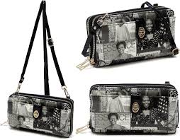

Obama Wallet Emporium

An "Obama wallet" refers to a wallet design inspired by the style, elegance, and practicality associated with Barack Obama, one of the most influential figures in recent history. While there isn’t an official product branded as an Obama wallet, the concept would likely align with qualities Obama embodies: sophistication, simplicity, and functionality. Such a wallet would reflect the balance between style and purpose, much like Obama’s approach to leadership and public service.
Design and Material
An Obama-inspired wallet would likely prioritize quality materials and craftsmanship. Leather, particularly in shades like black or brown, would be a natural choice due to its durability and timeless appeal. Leather is both professional and versatile, fitting in with formal and casual attire—qualities that align well with Obama’s famously adaptable style. The leather used might even have a touch of patina, offering a refined, vintage look that suggests both class and experience. Alternatively, for those who lean toward a more eco-conscious lifestyle, a sustainable material like vegan leather or recycled fabric could serve as a modern update, consistent with Obama’s advocacy for environmental responsibility.
Style and Structure
In terms of structure, the Obama wallet would likely be a classic bifold or trifold design. These styles are practical, fitting easily into most pockets while offering ample storage for essentials. The wallet would ideally strike a balance between holding necessary items and maintaining a slim profile, ensuring it is neither bulky nor cumbersome. For instance, a bifold wallet could offer a streamlined interior with enough room for a few cards, an ID, and some cash. Given Obama's emphasis on efficiency and practicality, an Obama wallet would avoid excess, focusing on keeping things simple and organized.
A smart feature for such a wallet could include a separate ID window, as well as several well-placed card slots to keep personal and financial items organized. A small zippered coin pouch might also be included, allowing for safe storage of small items without creating bulk. Additionally, an Obama-inspired wallet might incorporate RFID-blocking technology, aligning with the importance of security and privacy in today’s digital world.
Functional Details
The Obama wallet would be highly functional, with practical features that meet modern needs. Given the increasing popularity of digital payments and cashless transactions, the wallet might include dedicated card slots and even a minimalist cardholder insert. This focus on card storage reflects the reality that people today are more likely to carry cards than cash. However, a pocket for a few bills would still be available, recognizing the occasional need for cash in daily life.
For frequent travelers, an Obama wallet could come with a passport compartment or additional space for travel essentials. Since Obama is known for his international presence and diplomatic work, a travel-friendly design would be fitting, appealing to those who prioritize both functionality and style on the go.
Symbolism and Appeal
An Obama wallet would resonate with individuals who value a blend of professionalism and subtlety. Rather than flashy logos or extravagant details, this wallet would feature clean lines and understated design, symbolizing Obama’s calm, thoughtful approach to challenges. Such a wallet would be a favorite among professionals, students, and anyone who appreciates refined style with purpose.
Ultimately, the Obama wallet would be more than a practical accessory—it would embody values of elegance, responsibility, and efficiency, qualities Obama himself often represents. This wallet concept provides a thoughtful, refined accessory for the individual who wants to carry their essentials in a manner that is functional yet effortlessly sophisticated.